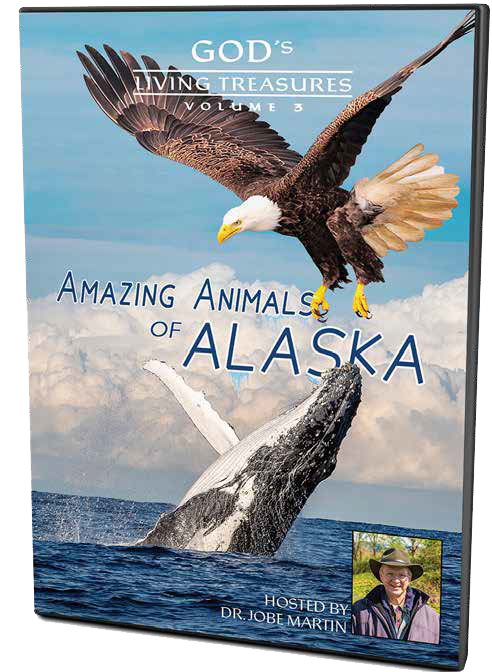

There are two main types of whales – baleen and toothed. Baleen whales feed by filtering
enormous amounts of water through their baleen, or plates of bristle-like keratin rather than teeth.
Evolutionary scientists have been curious for years as to how the whales can eat without choking or drowning
due to the large amounts of water that enter their mouths.
These whales lunge-feed, so the force of water entering into their mouths via baleen is very powerful.
While dissecting fin whales (attained from an Icelandic whaling station), researchers found a fascinating
feature that allows these whales to eat without choking – an oral plug, like a trapdoor, far back in their
mouths that blocks the route into the respiratory and digestive systems.
This plug is controlled by muscles that work together to allow for breathing and swallowing at the correct
times. These whales also have the ability to move and close off the larynx.
These two features are complex in the design of these whales using both passive and active muscles for
sealing off certain parts and allowing other parts to open for the right timing of pushing food or air
along.
Why are secularists so surprised that these whales would have these special features? They see these
features as adaptations that allowed evolution of marine animals from past land animals.
But adaptation does not equal Darwinian evolution (or Universal Common Descent). Adaptation is a God-given
ability that allows animals to thrive in their environments.
We aren’t surprised that our Creator would create these amazing whales with special features for breathing
and swallowing, while eating and swimming, from the beginning.
On day five of creation, God created ocean life, including whales. In their DNA, He gave them any codes
needed to best function as whales, never changing from or into another animal.
Seen in over 100 million households weekly on TBN and DirecTV’s NRB Network, David is one of the world’s foremost educators and speakers on Origins Science. With an extensive knowledge and the largest Creation Media ministry, David has built a solid case for our Creator and Savior, Jesus Christ.
Check out the new “Amazing Animals of Alaska” Volume 3 DVD to learn about the incredible